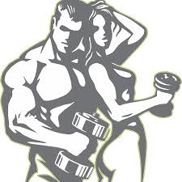

PRIRUČNIK: KAKO SAM SE UGOJIO I IZGRADIO MIŠIĆE
UVOD
Ja sam oduvek bio mršav i imao sam problem da dobijem na težini. Ljudi su mi govorili da imam sreće, ali ja sam želeo da izgledam snažnije i da imam više energije. Želeo sam plan koji je održiv i realan, a ne kratkotrajno rešenje. Ovaj priručnik je moj vodič kroz iskustva, greške i uspehe – sve što sam naučio o ishrani i treningu za mišićnu masu.
1. ZAŠTO JE DOBIJANJE MIŠIĆA DRUGAČIJE OD GUBITKA TEŽINE
- Dobijanje mišića zahteva višak kalorija, dok gubitak težine zahteva deficit.
- Nije dovoljno samo jesti – moraš pravilno kombinovati hranu i trening snage.
- Ključ je doslednost – čak i mala progresija dnevno daje velike rezultate dugoročno.
2. MOJE OSNOVNE LEKCIJE O ISHRANI
- Proteini grade mišiće.
- Ugljeni hidrati daju energiju za trening.
- Zdrave masti pomažu hormonima i oporavku.
- Redovni obroci su važniji od brojanja kalorija.
3. KOLIKO KALORIJA I MAKRONUTRIJENATA SAM KORISTIO
- Ciljao sam na +300–500 kalorija dnevno u odnosu na svoj potrošeni dnevni unos.
- Proteini: 1.6–2 g po kg telesne težine.
- Ugljeni hidrati: 3–5 g po kg telesne težine.
- Masti: 0.8–1 g po kg telesne težine.
4. MOJ PLAN OBROKA ZA MASU
- Doručak: ovsene pahuljice, mleko, banana, puter od kikirikija, whey protein.
- Užina: sendvič sa integralnim hlebom, pureće meso, sir, povrće.
- Ručak: pirinač, piletina/govedina, povrće, maslinovo ulje.
- Užina: smuti sa voćem, jogurtom i zobom.
- Večera: losos, krompir, povrće.
- Pred spavanje: grčki jogurt sa orašastim plodovima.
5. HRANA KOJU SAM NAJVIŠE KORISTIO
- Proteini: jaja, piletina, govedina, riba, whey protein.
- Ugljeni hidrati: pirinač, ovsene, krompir, testenina, voće.
- Masti: avokado, orašasti plodovi, maslinovo ulje, puter od kikirikija.
6. DODACI ISHRANI
- Whey protein – praktičan za dodatne proteine.
- Kreatin – povećava snagu i izdržljivost.
- Omega-3 – za zglobove i zdravlje srca.
- Multivitamini – osiguravaju nutrijente.
7. MOJ TRENING ZA MASU
- Fokus na osnovne vježbe: čučnjevi, mrtvo dizanje, benč, zgibovi.
- Trening 3–4 puta nedeljno.
- Progresivno opterećenje – stalno dodavanje težine ili ponavljanja.
8. KAKO SAM KOMBINOVAO ISHRANU I TRENING
- Obroci su pre-trening i posle-trening obavezni.
- Pre treninga – ugljeni hidrati + protein za energiju.
- Posle treninga – protein + brzi ugljeni hidrati za oporavak.
9. PRAĆENJE NAPRETKA
- Merenje težine i obima tela.
- Evidencija snage (težine, ponavljanja).
- Zapisivanje osećaja energije i sna.
10. MINI-IZAZOVI KOJE SAM PRAVIO
- 30-dnevni izazov: 3 glavna + 2 međuobroka, trening snage 5 dana nedeljno, 2 litre vode dnevno.
- 14-dnevni izazov: fokus na povećanje proteina i smanjenje praznih kalorija.
11. GREŠKE KOJE SAM RANIJE PRAVIO
- Previše kardio treninga.
- Očekivanje brzih rezultata.
- Preskakanje obroka i neplaniranje.
12. MOTIVACIJA I DISCIPLINA
- Planirao sam obroke unapred.
- Spremao hranu za 2–3 dana unapred.
- Postavio podsetnike i zapisivao napredak.
- Dodavao dodatne „kalorijske shake-ove“ kad je potrebno.
13. REZULTATI KOJE SAM POSTIGAO
- Dobio sam nekoliko kilograma čiste mišićne mase.
- Povećao snagu i izdržljivost.
- Osećam se energičnije i zdravije.
14. ZAKLJUČAK
Dobijanje mišića i telesne mase nije magija. Potrebni su pravilna ishrana, trening i strpljenje. Korak po korak, sa doslednošću i pravim navikama, rezultati dolaze. Ako sam ja uspeo, možeš i ti.